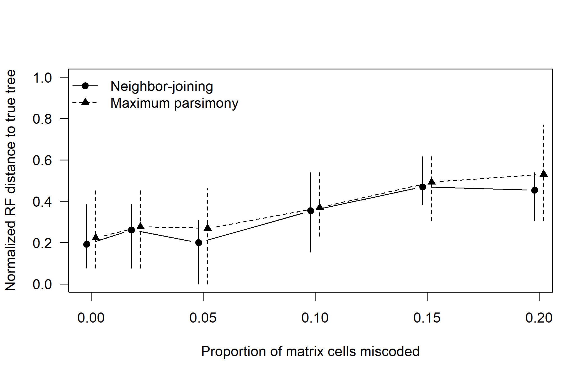
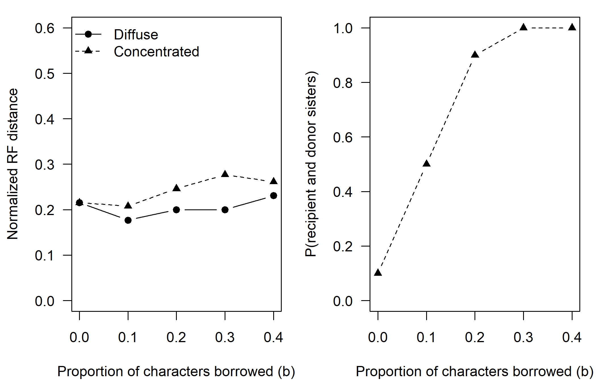
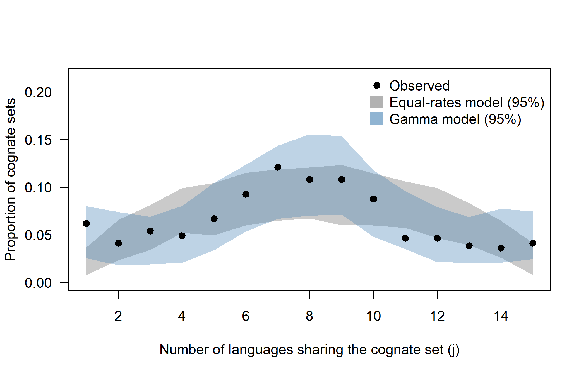

Chapter 15 Critiques, Pitfalls and Controversies
Linguistic phylogenetics has been controversial from the moment it began producing dates. Some of the criticism has been misdirected, aimed at glottochronology rather than at the models that replaced it, or at a caricature of Bayesian inference. Much of it has been sharp and productive, and has forced practitioners to clean their data, model borrowing and rate variation, justify their calibrations and test whether their models fit. The central question of this chapter is how a reader, or an author, can tell a robust result from an artifact of data, model or priors. We organize the critiques by where in an analysis an error can enter, work through the most prominent controversy in the field, the dispute over Indo-European origins, and end with a decision guide for choosing and checking models and a checklist for evaluating published work. Our aim is to be fair to both sides: critics have often been right about specific weaknesses, and practitioners have often been right that the weaknesses were fixable and that informal judgment has weaknesses of its own.
After reading this chapter you should be able to:
- distinguish stochastic from systematic error and explain why posterior probabilities and HPD intervals measure only the former;
- identify, for a published analysis, the stage (data, model, priors and calibrations, sampling, inference, interpretation) at which each criticism of it applies;
- explain why random coding error degrades trees gradually while concentrated borrowing produces confident wrong subgroups, and why agreement with accepted subgroups is not independent validation;
- classify a validation exercise as implementation validation, parameter recovery, robustness under misspecification, empirical adequacy or historical interpretation, and say what each can and cannot show;
- choose models, codings, priors and diagnostics for a realistic dataset, and state which of its parameters are identifiable, practically estimable, robust and historically interpretable;
- evaluate a published linguistic phylogeny with the checklist of Table 15.5.
15.1 A framework for thinking about error
Before turning to specific critiques it helps to have a vocabulary for the kinds of things that can go wrong. Statisticians distinguish two broad classes of error. Stochastic error (or sampling error) arises because the data are finite. A 200-item word list contains only so much information, and two analyses of independent 200-item lists from the same languages will give somewhat different trees. Stochastic error shrinks as data accumulate, and it is what bootstrap proportions, posterior probabilities and highest posterior density (HPD) intervals are designed to measure. Systematic error (or bias) arises because the model used to analyze the data is wrong in some way that matters. Systematic error does not shrink with more data; it often gets worse, because the analysis becomes more and more confident in the wrong answer. A phylogenetic analysis that ignores a strong, consistent signal of borrowing between two neighboring languages will, given enough characters, place them together with high support regardless of their true history.
The distinction matters because most of the uncertainty summaries reported in linguistic phylogenetics, such as posterior clade probabilities or the 95% HPD interval on a root age, measure only stochastic error conditional on the model being correct. A posterior probability of 1.0 for a clade means that, if the model, the priors and the data coding are all correct, the data leave no doubt. It does not mean the clade is certainly real. Many of the disputes covered in this chapter are, at bottom, arguments about systematic error that cannot be settled by pointing at narrow credible intervals.
A useful way to organize the critiques is by the stage of the analysis at which the error enters:
- Data. Are the cognate judgments correct? Was the word list appropriate? Were loanwords identified? Are the data coded in a way that respects the assumptions of the model?
- Model. Does the substitution model capture how words are gained and lost? Is rate variation among meanings and among lineages modeled? Is borrowing modeled or at least shown not to matter?
- Priors and calibrations. Do the priors on the tree, the branch lengths and the clock rate drive the results? Are calibrations independent of the hypothesis being tested?
- Sampling. Which languages were included, and how were languages distinguished from dialects?
- Inference. Did the MCMC converge? Were tree searches thorough? (These issues are treated in Chapters 5 and 6, and we mention them only briefly here.)
- Interpretation. Do the results actually bear on the historical question asked? Is a date for the root of a tree the same thing as a date for the dispersal of a speech community? Is a phylogeographic “homeland” a place where people lived or a statistical artifact of sampling?
We will see that the most heated controversies typically involve errors at several of these stages at once, and that critics and practitioners frequently talk past each other because they locate the problem at different stages.
Detecting systematic error requires evidence from outside the fitted model, and that evidence comes in kinds that should not be confused: implementation validation, parameter recovery, robustness under misspecification, empirical model adequacy and historical interpretation (Section 6.10; Section 15.12 applies them to linguistic data). The simulations in this chapter are labeled accordingly. Most published validation of linguistic phylogenetics consists of the first two kinds, which are necessary but easy to pass.
Throughout this chapter we use “practitioners” for researchers who build and publish computational phylogenies of languages and “critics” for those who have challenged them. The labels are a convenience. Many of the sharpest critiques have come from practitioners themselves, and several prominent critics have also published computational analyses.
15.2 Data quality and cognate judgment
15.2.1 What a cognate judgment is
Almost all lexical phylogenies rest on cognate judgments: decisions that two words in different languages descend from a common ancestral word by regular inheritance. English hand, German Hand, Dutch hand and Swedish hand belong to one cognate set; French main, Italian mano and Spanish mano (from Latin manus) belong to another; Russian ruka and Polish ręka to a third. In a binary presence/absence matrix (Chapter 3), each of these sets becomes a character, and each language is coded 1 if its word for ‘hand’ belongs to the set and 0 otherwise.
A cognate judgment is not an observation in the way that a nucleotide is. It is an inference, made by a specialist, from evidence that includes regular sound correspondences, morphological analysis, semantic plausibility and knowledge of borrowing history. Different specialists can and do disagree. The judgment may also depend on the depth of the analysis: two words may be cognate at the level of a root but not at the level of the full stem (English two and Latin duo share a root; English tooth and Latin dens, dent- also share a root, but with different derivational morphology). Chapter 3 discusses root-meaning versus stem-level coding and partial cognates in detail.
There are four main ways a cognate judgment can go wrong:
- False positives from chance resemblance. Words that look alike by accident are judged cognate. With short words and small phoneme inventories, chance resemblances are common, which is why the comparative method insists on systematic sound correspondences rather than similarity.
- False positives from undetected borrowing. A loanword is coded as an inherited cognate. English mountain (from Old French montagne) is cognate with French montagne in a broad sense, but the relationship is due to borrowing, not inheritance, and coding it as a shared cognate would wrongly pull English toward French.
- False negatives from sound change and semantic shift. Genuinely cognate words are so changed that they are not recognized. Armenian erku ‘two’ is regularly descended from the same Proto-Indo-European form as Latin duo, but the correspondence is not obvious without knowledge of Armenian historical phonology.
- Inconsistency. Different coders, or the same coder at different times, apply different standards. One may split a cognate set into two because of a derivational suffix while another lumps them.
15.2.2 The empirical record
How serious are these errors in practice? Several lines of evidence suggest that they are real but, in well-curated datasets of well-studied families, not overwhelming. Datasets have repeatedly been revised. The lexical database of Dyen et al. (1992) was assembled from a lexicostatistical tradition in which cognate decisions were sometimes made quickly across many languages; later Indo-European datasets (the Indo-European Lexical database, IELex, and its successor IE-CoR) involved extensive recoding, the addition of ancient languages and explicit documentation of judgments (see the case study below). Practitioners have argued that the main results of earlier studies survived these revisions; critics have argued that the revisions show how much depended on contestable choices. Both points can be true.
In less-studied families the problem is more severe. Where regular sound correspondences have not been worked out in detail, cognate judgments must rely more heavily on resemblance, and the risk of false positives (from chance and borrowing) rises. This is a genuine limit on what phylogenetic methods can do in such families. A tree inferred from impressionistic cognate judgments cannot be better than those judgments, however sophisticated the model.
Automated cognate detection (Chapter 3) offers consistency and reproducibility but introduces its own error profile. Evaluations against expert judgments typically report B-cubed F-scores well below 1, and the errors are not random: algorithms are more likely to miss cognates with extensive sound change and to group look-alike loans with inherited words (List et al. 2017). Rama et al. (2018) found that trees inferred from automatically detected cognates could come reasonably close to trees from expert judgments on several benchmark datasets, which is encouraging, but it should not be read as license to skip expert checking where expertise exists.
Two recent studies widen the picture of what counts as data error. Snee et al. (2026) compared wordlists for the same varieties compiled independently by different authors, seven wordlists from five families, and found that differences in concept translation, the choice of the word that answers a given concept before any cognate judgment is made, left lexical distances highly correlated but produced Bayesian trees whose normalized quartet distances ranged from 0.02 to 0.44, with the largest effects on low-level subgrouping. And Kassian and Starostin (2025) argue that even an expert, documented database such as IE-CoR can in places conflate cognacy with areal diffusion or with independent derivation from the same root.
The interplay of data revision and results can be followed in the Indo-European literature. Gray and Atkinson (2003) analyzed a matrix of roughly 2,400 cognate sets for 87 languages, based on the lexicostatistical lists of Dyen et al. (1992), supplemented by ancient languages including Hittite and the Tocharian languages. Critics pointed to errors in the underlying lists, including misidentified cognates, inconsistent treatment of synonyms and undetected loans (see, for example, Pereltsvaig and Lewis 2015). Later analyses used successively revised datasets: Bouckaert et al. (2012) used an expanded IELex-based dataset with about 100 languages, Chang et al. (2015) used a further curated version, and Heggarty et al. (2023) assembled the new IE-CoR database with explicit, documented cognate decisions for about 160 languages. The root ages estimated by these studies differ (see Section 15.9), but the differences have been attributed mainly to modeling choices, in particular how ancient languages are placed on the tree, rather than to cognate coding. The lesson is double-edged: careful recoding did not overturn the broad topology of Indo-European, but neither did it settle the dating controversy, which turned out to depend on the model.
15.2.3 Simulation: how much coding error can a tree tolerate?
A simple simulation helps build intuition. We simulate a “true” tree of 16 languages, generate binary cognate characters along it under a continuous-time Markov model with gamma-distributed rate variation among characters (Chapter 7), and then corrupt the data by flipping a random fraction of the cells, as if a careless coder had misjudged them. We then reconstruct trees with neighbor-joining (NJ) and maximum parsimony (MP) and measure their normalized Robinson-Foulds (RF) distance to the true tree (Robinson and Foulds 1981), where 0 means identical topologies and 1 means no shared splits. In the vocabulary of Section 6.10, this is a test of robustness under misspecification, with a simple and favorable kind of misspecification: errors that fall at random.
library(phangorn)
set.seed(1501)
n_lang <- 16
true_tree <- phytools::pbtree(n = n_lang, scale = 1,
tip.label = sprintf("L%02d", 1:n_lang))
# Simulate binary cognate characters with discrete-gamma rate variation.
# Characters absent from every sampled language are dropped, because a
# cognate set with no attested members can never be observed.
sim_cognates <- function(tree, n_char = 500, rate = 1.5, shape = 0.5, k = 4) {
cat_rates <- discrete.gamma(shape, k)
blocks <- lapply(cat_rates, function(r) {
as.character(simSeq(tree, l = n_char %/% k, type = "USER",
levels = c("0", "1"), rate = rate * r))
})
m <- do.call(cbind, blocks)[tree$tip.label, , drop = FALSE]
m[, colSums(m == "1") > 0, drop = FALSE]
}
as_phydat <- function(m) phyDat(m, type = "USER", levels = c("0", "1"))
infer_trees <- function(m) {
d <- as_phydat(m)
nj_tree <- NJ(dist.hamming(d))
mp_tree <- optim.parsimony(nj_tree, d, trace = 0)
list(nj = nj_tree, mp = mp_tree)
}
rf_norm <- function(a, b) RF.dist(a, b, normalize = TRUE, rooted = FALSE)
# Coder error: flip a random fraction of matrix cells
flip_cells <- function(m, err) {
hit <- matrix(runif(length(m)) < err, nrow(m))
m[hit] <- ifelse(m[hit] == "1", "0", "1")
m
}
dim(sim_cognates(true_tree))#> [1] 16 452err_grid <- c(0, 0.02, 0.05, 0.10, 0.15, 0.20)
n_rep <- 10
res_err <- do.call(rbind, lapply(err_grid, function(e) {
do.call(rbind, lapply(seq_len(n_rep), function(r) {
tr <- infer_trees(flip_cells(sim_cognates(true_tree), e))
data.frame(error = e, NJ = rf_norm(tr$nj, true_tree),
MP = rf_norm(tr$mp, true_tree))
}))
}))
summ <- aggregate(cbind(NJ, MP) ~ error, data = res_err, FUN = mean)
lo <- aggregate(cbind(NJ, MP) ~ error, data = res_err, FUN = min)
hi <- aggregate(cbind(NJ, MP) ~ error, data = res_err, FUN = max)
off <- 0.002
plot(summ$error - off, summ$NJ, type = "b", pch = 19, ylim = c(0, 1),
xlab = "Proportion of matrix cells miscoded",
ylab = "Normalized RF distance to true tree", las = 1)
segments(summ$error - off, lo$NJ, summ$error - off, hi$NJ)
lines(summ$error + off, summ$MP, type = "b", pch = 17, lty = 2)
segments(summ$error + off, lo$MP, summ$error + off, hi$MP, lty = 2)
legend("topleft", legend = c("Neighbor-joining", "Maximum parsimony"),
pch = c(19, 17), lty = c(1, 2), bty = "n")
Figure 15.1: Effect of random coding error on tree accuracy. Each point is the mean normalized Robinson-Foulds distance between the true 16-language tree and trees inferred by neighbor-joining (NJ) and maximum parsimony (MP), over 10 simulated datasets; vertical bars span the minimum and maximum. Random errors degrade accuracy gradually.
#> error NJ MP
#> 1 0.00 0.192 0.223
#> 2 0.02 0.262 0.277
#> 3 0.05 0.200 0.269
#> 4 0.10 0.354 0.369
#> 5 0.15 0.469 0.492
#> 6 0.20 0.454 0.531Figure 15.1 shows the typical pattern. Even with no coding error the inferred trees are not perfect, because some internal branches of the true tree are short and the finite data contain little information about them. As random error increases, accuracy declines gradually; a few percent of miscoded cells does little harm, while a fifth of cells miscoded destroys much of the signal. The important qualifier is random. Random errors add noise that is spread evenly across the tree, so they mainly erode support for short branches. Systematic errors, such as consistently failing to recognize loans from one particular donor, behave very differently, as we will see in Section 15.4.
Inter-coder disagreement should be measured and reported, not just acknowledged. Where two or more specialists have coded the same material, agreement statistics (for example, pairwise agreement on cognate set membership, or B-cubed scores computed with one coder as reference) and a sensitivity analysis that reruns the phylogeny on each coder’s matrix are far more informative than a statement that the data were “carefully checked”.
15.3 List choice, meaning slots and semantic coding
15.3.1 Which meanings?
Lexical phylogenies are usually built from basic vocabulary: meanings such as ‘hand’, ‘water’, ‘two’, ‘die’ and ‘I’ that every language expresses and that are thought to be relatively resistant to borrowing. The classic lists are those of Morris Swadesh, especially the 100-item list of Swadesh (1955) and its 200-item predecessor. The Leipzig-Jakarta list (Tadmor et al. 2010) was derived empirically from the World Loanword Database (Haspelmath and Tadmor 2009a) by selecting meanings with low borrowing rates across a world-wide sample of 41 languages. The ASJP project uses a 40-item subset of the Swadesh list. Chapter 3 describes these lists.
The choice of list matters in three ways. First, different meanings change at very different rates. Words for ‘two’, ‘three’, ‘who’ and ‘I’ are replaced extremely slowly in Indo-European, while words for meanings such as ‘dirty’ or ‘turn’ are replaced much more often (Pagel et al. 2007). A list weighted toward fast meanings carries more information about recent splits and less about deep ones. Second, meanings differ in borrowability; a list that includes culturally salient items will contain more loans. Third, the meanings on the list must be translatable into every language in the sample without forcing the coder into arbitrary choices. ‘Ice’ or ‘snow’ may lack a clear equivalent in tropical languages, and ‘to wash’ may correspond to several verbs depending on what is washed.
Classic glottochronology made list choice especially consequential. It assumed a universal constant retention rate \(r\) per millennium for basic vocabulary and estimated the time since two languages separated as \[\begin{equation} t = \frac{\ln C}{2 \ln r}, \tag{15.1} \end{equation}\] where \(C\) is the proportion of shared cognates (Lees 1953) (Section 9.2). Bergsland and Vogt (1962) showed that the constant failed badly: in the case they examined most closely, Icelandic had retained far more of its basic vocabulary than Norwegian over the same period, so the formula would have dated the split between them very wrongly. Modern models do not assume a universal constant (Chapter 9) but inherit a softer version of the problem: rates are estimated from calibrations within the family, and the estimate depends on which meanings are included.
The failure of glottochronology is a cautionary tale that practitioners and critics both invoke, for opposite purposes. Critics such as Pereltsvaig and Lewis (2015) argue that Bayesian dating is “glottochronology in disguise”, inheriting its flaws. Practitioners reply that the specific flaws identified by Bergsland and Vogt (1962) and Hoijer (1956), namely a universal constant rate, identical rates across meanings, no account of borrowing and a single distance-based summary of the data, are exactly what modern models relax: rates vary among meanings (gamma rate heterogeneity) and among lineages (relaxed clocks), calibrations are family-internal and expressed as distributions, and the full character data rather than a pairwise percentage are analyzed (Atkinson et al. 2005; Gray et al. 2011). The fair summary is that modern models do address the specific objections, but they replace a strong assumption (a universal rate) with weaker assumptions (rates drawn from a parametric distribution, calibrations correctly specified) that are still assumptions and still need testing.
15.3.2 Synonyms, polysemy and the “one word per meaning” problem
A word list asks, for each meaning, “what is the word?” Natural languages often answer with several words. English has big and large, little and small, dog and hound (with different nuances). The coder must decide whether to record all synonyms, only the most basic one, or only the most frequent one, and those decisions differ among datasets. Recording multiple synonyms increases the number of 1s in a language’s row and can make it look more similar to several relatives at once. Recording only one discards information and requires a judgment of “basicness” that is hard to make consistently across languages documented by different fieldworkers.
Polysemy creates a mirror-image problem. In many languages one word covers both ‘hand’ and ‘arm’, or both ‘tree’ and ‘wood’. If ‘hand’ and ‘arm’ are both on the list, the same lexeme appears twice and its history is counted twice. Swadesh was aware of this and dropped some such pairs when he shortened his list, but others remain; Kessler (2001) calls the general difficulty the “shared roots problem”, and McMahon and McMahon (2005) show how acute it is in languages that derive many basic meanings from a few roots. Semantic shift creates a third problem: English hound and German Hund are cognate, but only the German word fills the ‘dog’ slot. Whether such cases count as cognate presences depends on whether coding is by meaning slot (the usual practice) or by root regardless of meaning (root-meaning coding; see Chapter 3). Neither choice is wrong, but they encode different evolutionary processes, and a model of lexical replacement within meaning slots assumes the former.
15.3.3 Binary coding and the non-independence of characters
Most Bayesian analyses convert meaning-slot data to a binary matrix in which each cognate set is a separate character. This is convenient, because binary models are simple and well understood (Chapter 7), but it violates a central assumption of standard phylogenetic likelihoods: that characters evolve independently given the tree.
Consider the meaning ‘hand’ in a sample of Germanic, Romance and Slavic languages with three cognate sets (the hand, manus and ruka sets). In the binary coding each language receives three characters for ‘hand’, one per set. If a language has exactly one word for ‘hand’, exactly one of its three characters is 1. The characters are therefore linked by a constraint. For meaning \(m\) with \(K_m\) cognate classes and binary characters \(x_{m1}, \ldots, x_{mK_m}\), every language with data for \(m\) satisfies \[\begin{equation} \sum_{k=1}^{K_m} x_{mk} \geq 1, \tag{15.2} \end{equation}\] with equality if synonyms are excluded. A binary model that treats the \(K_m\) characters as independent assigns positive probability to configurations that violate this constraint (for instance, a language with no word for ‘hand’ at all) and treats the loss of one cognate and the gain of another as two independent events, when in reality a replacement is a single event that changes two characters at once.
Chapter 7 compares the models that respect this constraint with those that do not (Section 7.2.1): binary likelihoods are composite likelihoods, which often give reasonable topologies but overstate the information in the data and weight meanings by their number of cognate classes. For the critic and the reviewer, the practical consequences are two. Posterior intervals from binary analyses, including those on dates, are likely to be too narrow, so an apparent conflict between two published dates may be smaller than their intervals suggest. And branch lengths, and therefore dates, can shift when the same data are recoded by meaning. Both can be checked: rerun the analysis with multistate coding, or bootstrap whole meanings rather than single characters (Chapter 17 shows how). Explicit models of replacement with synonymy, in which cognates are born, coexist and die within a meaning slot (Nicholls and Gray 2008; Ryder and Nicholls 2011), remain one of the open modeling problems of the field. Recent work shows both the promise and the difficulty: the infinite-state Multistate model respects the one-word-per-slot constraint but becomes fragile when loans or semantic shifts create competing words (Rönchen et al. 2024), a model with explicit polymorphism has so far been used to simulate data rather than to infer trees (Canby et al. 2024), and richer representations quickly become overparameterized for datasets of realistic size (Häuser et al. 2026) (Section 7.8.3).
15.3.4 Ascertainment: the characters you cannot see
A further subtlety concerns which characters can be observed at all. A cognate set is defined by its members, so a word that existed in the ancestor of a family but was lost in every sampled descendant leaves no trace, and the data matrix contains no all-zero columns. If the likelihood ignores this ascertainment bias, the data look more variable than they are, and the model overestimates the amount of change: branch lengths come out too long and rates too high (Lewis 2001). The standard correction (Section 5.6) conditions the likelihood on the character being observable. For \(N\) characters, \[\begin{equation} L(\tau, \theta) = \prod_{i=1}^{N} \frac{P(D_i \mid \tau, \theta)}{1 - P(\mathbf{0} \mid \tau, \theta)}, \tag{15.3} \end{equation}\] where \(P(\mathbf{0} \mid \tau, \theta)\) is the probability of the all-absent pattern. Section 7.4 derives the corrections for other filtering schemes. The point for evaluating published work is that the correction must match how the data were actually assembled: if singletons or constant characters were removed, the denominator must exclude those patterns too. Modern software (BEAST 2, RevBayes, MrBayes) implements several corrections, but the analyst has to choose the one that matches the data.
Whether singletons and invariant characters were removed, and whether the ascertainment correction matches that choice, should be stated explicitly in every methods section, since a reader can check the choice only if both the filter and the correction are reported. A mismatch rarely changes topology much, but it can shift branch lengths and therefore dates by an amount comparable to the HPD intervals that are reported.
15.4 Borrowing, contact and treelikeness
The oldest objection to language trees is that languages do not only split; they also exchange material. Johannes Schmidt’s wave model of 1872 was a response to exactly this problem (Chapter 1), and the debate between Stammbaum and Wellentheorie has never really ended. Contemporary versions of the objection come in three strengths.
The weak version says that undetected loans add noise to cognate data. This is uncontroversially true and is addressed, imperfectly, by flagging known loans and excluding them (Chapter 3). The intermediate version says that undetected borrowing biases tree inference in systematic ways: it pulls borrowing languages together, shortens the branches between them and makes dates too young. The strong version says that for some families, or some periods in the history of all families, the process of diversification is not tree-like at all. Dialect continua diversify by the accumulation of overlapping innovations, so there is no tree to find (François 2015; Kalyan and François 2018).
The intermediate version was tested directly by Greenhill et al. (2009) (Section 8.3): with borrowing simulated on known trees between any pair of languages or only between geographic neighbors, Bayesian reconstruction recovered topologies reasonably well at the levels of borrowing they considered realistic for basic vocabulary, while estimated dates tended to become younger as borrowing increased. This useful result should not be over-generalized: the simulation assumes a particular model of borrowing, and real borrowing is often concentrated in time (intense contact episodes) and in space (a dominant neighbor), which is closer to the worst case.
Our own small simulation makes the distinction between diffuse and concentrated borrowing vivid. Starting from the same 16-language tree, we either (a) let each character, with probability \(b\), be copied from a randomly chosen language to another randomly chosen language, or (b) let each character, with probability \(b\), be copied from one fixed donor (L04) into one fixed recipient (L01) that belongs to a different subgroup. The total amount of borrowing is the same in both scenarios; only its concentration differs. Like the previous simulation, this is a test of robustness under misspecification: the data violate the tree model’s assumption that lineages evolve independently after they split. Unlike random error, the violation here is systematic.
recipient <- "L01"; donor <- "L04"
true_clade <- c("L01", "L02", "L03") # the recipient's real subgroup
borrow_fixed <- function(m, b) {
hit <- runif(ncol(m)) < b
m[recipient, hit] <- m[donor, hit]
m
}
borrow_random <- function(m, b) {
for (j in which(runif(ncol(m)) < b)) {
pair <- sample(rownames(m), 2)
m[pair[2], j] <- m[pair[1], j]
}
m
}
b_grid <- c(0, 0.1, 0.2, 0.3, 0.4)
res_b <- do.call(rbind, lapply(b_grid, function(b) {
do.call(rbind, lapply(seq_len(n_rep), function(r) {
base <- sim_cognates(true_tree)
t_fix <- infer_trees(borrow_fixed(base, b))$nj
t_rnd <- infer_trees(borrow_random(base, b))$nj
data.frame(b = b,
diffuse = rf_norm(t_rnd, true_tree),
concentrated = rf_norm(t_fix, true_tree),
sisters = is.monophyletic(t_fix, c(recipient, donor)))
}))
}))
sb <- aggregate(cbind(diffuse, concentrated, sisters) ~ b, data = res_b,
FUN = mean)
op <- par(mfrow = c(1, 2), mar = c(4.2, 4.2, 1, 1))
plot(sb$b, sb$diffuse, type = "b", pch = 19, ylim = c(0, 0.6), las = 1,
xlab = "Proportion of characters borrowed (b)",
ylab = "Normalized RF distance")
lines(sb$b, sb$concentrated, type = "b", pch = 17, lty = 2)
legend("topleft", c("Diffuse", "Concentrated"), pch = c(19, 17),
lty = 1:2, bty = "n")
plot(sb$b, sb$sisters, type = "b", pch = 17, lty = 2, ylim = c(0, 1),
las = 1, xlab = "Proportion of characters borrowed (b)",
ylab = "P(recipient and donor sisters)")
Figure 15.2: Diffuse versus concentrated borrowing. Left: normalized Robinson-Foulds distance between the true and the neighbor-joining tree when a proportion b of characters is borrowed between random pairs of languages (diffuse) or always from L04 into L01 (concentrated). Right: proportion of replicates in which the recipient L01 and the donor L04 are inferred as sister languages, which they are not in the true tree.
#> b diffuse concentrated sisters
#> 1 0.0 0.215 0.215 0.1
#> 2 0.1 0.177 0.208 0.5
#> 3 0.2 0.200 0.246 0.9
#> 4 0.3 0.200 0.277 1.0
#> 5 0.4 0.231 0.262 1.0The left panel of Figure 15.2 shows that the overall RF distance barely registers either kind of borrowing: in both scenarios most of the tree is still recovered. The right panel shows why that summary is misleading. Under concentrated borrowing, once something like a fifth of the characters have been copied, the recipient is placed as the sister of its donor in essentially every replicate, a confident and wrong result. A global accuracy score averages a severe local error over many correct splits. The general point is that “the tree is robust to borrowing” and “this particular subgrouping is an artifact of borrowing” are compatible statements, and claims about specific contested subgroups (Italo-Celtic, Balto-Slavic-Germanic links, the position of Albanian or Armenian) require local tests rather than global ones.
How can such artifacts be detected? Network methods such as NeighborNet display conflicting signal rather than forcing a tree, and treelikeness statistics such as delta scores and Q-residuals quantify how much conflict there is (Gray et al. 2010). Explicit models of lateral transfer (Kelly and Nicholls 2017) and contact-aware phylogenetic models (Neureiter et al. 2022) go further by inferring borrowing events jointly with the tree. These are the subject of Chapter 8. The point to make here is that treelikeness is an empirical property that can and should be measured for each dataset, not assumed in either direction.
A well-known exchange in the Austronesian literature shows how the borrowing critique and its rebuttal can talk past each other. Donohue et al. (2012) argued that the basic-vocabulary cognate analysis of Austronesian by Gray et al. (2009) fails to distinguish shared retentions from shared innovations and, where geography and accepted subgrouping diverge, groups languages by geographic and social proximity, reflecting borrowing and diffusion, rather than by subgroup. Greenhill and Gray (2012) replied that the argument misunderstood how Bayesian phylogenetic analyses of Austronesian basic vocabulary had been carried out and what their results showed. Readers of the exchange will notice that the two sides differ less about whether borrowing occurs than about how much of it survives into curated basic-vocabulary datasets after known loans are excluded, and about whether a tree with uncertain internal branches is a defensible summary of a history that is partly reticulate. Questions of that kind can, in principle, be answered with explicit models of borrowing and with posterior predictive checks (Section 15.12), and much of the later literature has moved in that direction.
15.5 Model misspecification
All models are wrong, and the useful question is whether a given model is wrong in ways that matter for the inference at hand. The substitution models used for cognate data (Chapter 7) make several assumptions that are known to be violated to some degree.
Rate homogeneity across characters. Different meanings change at different rates, and within a meaning different cognate sets may have different gain and loss dynamics. Gamma-distributed rates capture some of this variation, and the improvement in fit is typically large (we will see an example in Section 15.12). But a gamma distribution with a single shape parameter is a convenient parametric form, not a law of nature. Meaning-specific rates or mixture models may fit better.
Stationarity and time-reversibility. Standard models assume that the process of gain and loss is the same throughout the tree and that the equilibrium frequency of cognate presence is constant. In reality, a cognate set is born once (when a new word arises or a meaning shift occurs) and then lost independently in descendant lineages. This is the logic of the stochastic Dollo model (Nicholls and Gray 2008) (Section 7.7), and a reversible model applied to such data treats some patterns as parallel gains that are in fact single births followed by losses. Because reversible and Dollo-type models account for the same patterns with different numbers of events, they can yield different branch lengths and root ages for the same data, and comparing them is a simple check on how far the dates depend on this assumption.
Independence among lineages. Models assume that, once two lineages have split, their subsequent changes are independent. Borrowing (Section 15.4) and parallel semantic development violate this. Parallel development is underappreciated: the same semantic shift (for instance, from ‘see’ to ‘know’, or from ‘skin’ to ‘bark’) can happen independently in related languages because they share the semantic structure that makes the shift natural. Such parallel shifts create homoplasy that looks like shared inheritance.
Clock assumptions. Relaxed-clock models assume that rates vary among branches according to a parametric distribution (lognormal, exponential, or autocorrelated). Punctuational change at splits (Atkinson et al. 2008), rate changes associated with population bottlenecks or contact, and rate differences between very old and very young parts of a tree are all imperfectly captured. Chapter 9 reviews the evidence.
The difficulty is that model misspecification is not visible in the posterior distribution itself. A misspecified model can produce a well-converged MCMC, a sharp posterior and narrow HPD intervals. Detecting it requires looking outside the model, through model comparison (marginal likelihoods and Bayes factors, Chapter 6), which tells us which of several models is least wrong, and through model adequacy tests, which tell us whether even the best model is good enough. The second kind of test, an assessment of empirical adequacy, is much less common in linguistic phylogenetics and is discussed in Section 15.12 and Chapter 16. A third kind of evidence comes from simulation with deliberate violations of the model (robustness under misspecification), which shows how large a violation must be before a conclusion changes.
There is a further complication. The phrase “least wrong” presupposes that the model with the best relative fit is also the one whose inferences are most accurate. Rönchen (2025) argues that for cognate data this need not hold: finite-state Markov chains such as the covarion model, combined with the ascertainment correction used for cognate data, can fit better than Dollo-type models and still infer less accurate trees, because they accommodate the data with an incorrect account of how it arose (Rönchen, Häuser, et al. 2025). The argument rests partly on work that had not been peer reviewed at the time of writing, but it echoes a distinction drawn by Hammarström et al. (2019): inferring a language tree is explanatory rather than predictive modeling, so tests designed for predictive models, such as performance on held-out data, say little about how well a model explains the history behind the data. If the argument holds, model comparison by marginal likelihood needs to be complemented by simulation from realistic generating processes before a winning model is trusted.
15.6 Priors that drive results
15.6.1 What priors do
Bayesian inference combines the likelihood with prior distributions on every unknown: \[\begin{equation} p(\tau, \mathbf{t}, \theta \mid D) \propto P(D \mid \tau, \mathbf{t}, \theta)\, p(\mathbf{t} \mid \tau, \lambda, \mu)\, p(\tau)\, p(\theta), \tag{15.4} \end{equation}\] where \(p(\mathbf{t} \mid \tau, \lambda, \mu)\) is the tree prior (often a Yule or birth-death process; Chapter 6) and \(p(\theta)\) collects priors on substitution and clock parameters. When data are informative about a quantity, the prior matters little. When data are weakly informative, the prior can dominate.
Divergence times are a case in which the data are inherently weakly informative. Cognate data tell us about the amount of change along each branch, which is the product of rate and time. Separating rate from time requires calibrations (Section 9.1.1), and between calibrations the tree prior and the clock prior do much of the work. This is not a peculiarity of linguistics; it is well known in molecular dating (Reis et al. 2016). Rannala (2002) discussed how parameters that are not separately identifiable from the data have posteriors that remain sensitive to their priors no matter how much data is collected.
15.6.2 Documented sensitivities
Several kinds of prior sensitivity have been documented or plausibly argued for linguistic data.
- Tree priors and ages. The choice between Yule, birth-death and coalescent tree priors affects the distribution of node ages, especially when the tree prior is in tension with calibrations. Rama (2018) compared three tree priors across five Indo-European datasets and reported that the inferred dates depended on the choice of tree prior, which is a warning against treating any single date as robust.
- Branch-length priors. In unrooted, non-clock analyses, the prior on branch lengths can strongly influence the total tree length, a phenomenon studied in biology under the label “tail paradox” (Rannala et al. 2012). This is relevant to studies that infer topologies first and dates later.
- Calibration priors. When several calibration densities are specified, their joint effect is not simply their product, because they interact through the tree prior. The effective prior on a calibrated node can differ markedly from the density the analyst specified (Heath et al. 2014). In biology this is a well-known trap; in linguistics it is rarely checked.
- Clock-rate priors. Diffuse priors on the clock rate interact with the calibrations and the tree prior. If the calibrations are few and wide, the posterior root age can be pulled toward wherever the tree prior places mass.
Always run the analysis once with the data removed (“sampling from the prior”). Every Bayesian package used in linguistics supports this. Compare the prior distribution of the root age, of key clade ages, and of clade probabilities with their posteriors. If the posterior root age looks very much like the prior, the data are not driving the result. If clade probabilities under the prior are far from uniform (which happens when calibrations or monophyly constraints are present), interpret posterior clade probabilities relative to them.
15.7 Calibration choices
Calibrations convert relative branch lengths into absolute times. In linguistics they come from three sources: historically attested splits (for example, the settlement of Iceland in the late ninth century as a maximum age for the Icelandic-Norwegian split), ancient languages with known dates used as tips, and archaeological or genetic evidence linked to a linguistic event by argument. The first two are usually uncontroversial in principle, though the details matter: when exactly did Latin and the ancestor of the Romance languages diverge, given that Classical Latin is a literary register and not the direct ancestor of spoken Romance? The third is controversial precisely because the link between an archaeological culture and a language is an inference.
Three pitfalls deserve emphasis.
Circularity. If the hypothesis being tested is that a language family spread with agriculture, then calibrating the tree with archaeological dates for the spread of agriculture is circular. The circularity can be subtle: a calibration on an internal node that is itself justified by the farming hypothesis will push the root age toward the farming date. Good practice is to use only calibrations that are independent of the hypothesis and to show that results hold when contested calibrations are removed.
Calibrations as point values or as hard bounds. A historical “date” for a split is usually a date for an event that implies the split had happened (a terminus ante quem) or had not yet happened (a terminus post quem). Encoding such information as a narrow normal distribution centered on the event date misrepresents it. Maurits et al. (2020) review how linguistic calibrations have been justified and argue for explicit, documented reasoning for each calibration, in the spirit of the best-practice guidelines developed for fossil calibrations in biology.
Ancestors placed as sisters. Ancient languages such as Latin, Vedic Sanskrit, Old Irish or Classical Armenian are, in many cases, close to the direct ancestors of later languages. Standard tree models treat every sampled language as a tip, so an ancient language must be placed as a sister of its descendants with a branch of its own. The model then has to explain the differences between, say, Latin and its sister Proto-Romance node as change on Latin’s own branch, which can distort rate estimates and therefore dates. This was the central technical argument of Chang et al. (2015), discussed below, and it motivated the use of sampled-ancestor models in Heggarty et al. (2023) (Sections 3.2.2 and 10.6).
15.8 Sampling of languages, and the language-dialect problem
15.8.1 Which languages?
Every phylogeny is a tree of the languages that were sampled, not of the family as a whole. Sampling affects inference in several ways that are well understood in biology. Adding taxa can break up long branches and reduce long-branch attraction (Zwickl and Hillis 2002), so a sparse sample of a diverse family is more error-prone than a dense one. Root ages and the placement of the root depend on which early-diverging lineages are included; omitting an isolate-like branch can make the family look younger. Phylogeographic inference (Chapter 11) is especially sensitive, because the inferred homeland is pulled toward wherever the sampled languages cluster. And diversification analyses (Chapter 16) require explicit assumptions about the proportion of extant languages sampled.
In linguistics there is an additional complication: the sample of documented languages is not random. Languages spoken by larger, more accessible or politically prominent communities are better documented; extinct languages are known only if they were written; and some subgroups have been studied far more intensively than others. A sample of Indo-European that includes 15 Romance and 3 Indo-Iranian varieties says more about Romance than about Indo-Iranian, and analyses of rates or homelands can be distorted by such imbalance.
15.8.2 Languages, dialects and the units of analysis
Biologists argue about species concepts; linguists argue about what counts as a language. The usual criteria, mutual intelligibility, a shared standard or a shared name, are graded and often conflict. Glottolog distinguishes “languoids” at many levels precisely to avoid forcing a single answer. For phylogenetic analysis the problem has a specific form. If a dialect continuum is sampled as several “languages”, the tree model is asked to impose a branching structure on what may be a network of overlapping innovations. If it is sampled as a single language, internal variation is ignored and the chosen variety may be unrepresentative.
There is no general solution, but there are better and worse practices. The units of analysis should be justified, ideally with reference to the question asked (a homeland analysis may need geographic coverage, a dating analysis may need well-documented, clearly distinct languages). Sensitivity analyses that swap one variety for another, or that merge closely related varieties, can show whether the result depends on the choice. Chapter 16 describes species-delimitation methods from biology that could make these decisions more explicit.
15.9 The Anatolia versus Steppe controversy
No dispute illustrates the issues of this chapter better than the debate over where and when Proto-Indo-European was spoken. It involves every stage of an analysis: data, models, priors, calibrations, sampling and interpretation. It is also a case in which independent evidence, ancient DNA, arrived in the middle of the debate and changed its terms.
15.9.1 The two hypotheses
The Steppe (or Kurgan) hypothesis, associated with Marija Gimbutas and developed in detail by Mallory (1989) and Anthony (2007), places Proto-Indo-European in the Pontic-Caspian steppe north of the Black and Caspian Seas around 6,500 to 5,500 years ago, probably in the earlier part of that range (about 4500 BCE in Mallory’s estimate) (Chang et al. 2015), and links the dispersal of the family to mobile pastoralist societies of the Yamnaya horizon and their successors. The Anatolian hypothesis of Renfrew (1987) places Proto-Indo-European in Anatolia around 9,000 to 8,000 years ago and links the dispersal to the spread of farming into Europe.
The two hypotheses make different predictions about the age of the root of the Indo-European tree. Under the Steppe hypothesis the root (more precisely, the split between Anatolian and the rest) should be no older than about 6,500 to 7,000 years; under the Anatolian hypothesis it should be about 8,000 years or older.
15.9.2 The linguistic paleontology argument
The traditional linguistic argument for the Steppe hypothesis is linguistic paleontology. Proto-Indo-European can be reconstructed with a vocabulary for wheeled vehicles, including words for ‘wheel’, ‘axle’, ‘thill’ (shaft) and ‘to convey in a vehicle’. Wheeled vehicles probably did not exist before about 4000 BCE, and perhaps not before 3500 BCE; the earliest archaeological evidence for them dates to the second half of the fourth millennium BCE. If the vocabulary was inherited from the common ancestor rather than borrowed or independently coined, then Proto-Indo-European (at least the stage ancestral to the non-Anatolian branches) cannot have broken up much earlier than about 5,500 years ago (Anthony 2007; Anthony and Ringe 2015). Proponents of the older dates reply that some of the wheel words may be derived independently in different branches from older roots with general meanings (‘turn’, ‘carry’), that semantic change from an older meaning is possible, and that the Anatolian branch, which may have split first, has little of this vocabulary, so the argument constrains only the later “core” of the family.
15.9.3 The phylogenetic dates
Gray and Atkinson (2003) applied Bayesian phylogenetic dating to the cognate data described above and obtained a root age of roughly 7,800 to 9,800 years before present, consistent with the Anatolian hypothesis. Bouckaert et al. (2012) extended the analysis with a larger dataset and continuous phylogeography, again obtaining an old root and inferring an Anatolian homeland. These papers were widely publicized and widely criticized.
The criticisms ranged across the whole framework of this chapter. Pereltsvaig and Lewis (2015), in a book-length critique, argued that the cognate data contained errors and inconsistencies, that the inferred tree contained subgroupings and dates at odds with the comparative method, that the phylogeographic model of diffusion could not represent known historical migrations, nor the kind of directional, punctuated migrations that the Steppe hypothesis posits, and produced maps that conflicted with documented history, that the method could not accommodate linguistic paleontology, and that the dates were driven by assumptions rather than data. Other critics focused on the treatment of ancient languages and calibrations, and on whether a roughly clock-like rate of lexical replacement is plausible over thousands of years.
Chang et al. (2015) provided the most influential technical response from within the computational framework. They pointed out that several ancient languages in the dataset (for instance, Latin relative to Romance, Vedic Sanskrit relative to Indic, Old Irish relative to Modern Irish) are close to being direct ancestors of later languages, so that an unconstrained tree model places them as sisters of their descendants and must “explain” their differences from later languages as change on branches of their own (Section 15.7). Chang and colleagues imposed ancestry constraints, forcing the ancient languages to sit at or very near the ancestral nodes of their descendants. With these constraints, and a curated version of the data, the root age dropped to roughly 6,000 years before present (medians of about 5,900 to 6,500 years across their main analyses), consistent with the Steppe hypothesis. Without the constraints, their analysis reproduced the older dates. The paper is a model of how to criticize a phylogenetic result from inside the method: it identified a specific modeling assumption, explained mechanically why it would bias dates, and showed that relaxing it changed the result.
15.9.4 Ancient DNA
From 2015 onward, ancient genome studies transformed the archaeology of the question. Haak et al. (2015) and Allentoft et al. (2015) reported a massive movement of people with ancestry related to the Yamnaya steppe populations into central and northern Europe in the third millennium BCE, associated with the Corded Ware culture. Later work traced steppe-related ancestry into South Asia in the second millennium BCE (Narasimhan et al. 2019). These findings were widely read as strong support for the Steppe hypothesis, at least for the spread of Indo-European languages into Europe north of the Alps and into South Asia, because they demonstrated a population movement of the right date and direction for which there had previously been only indirect evidence.
Ancient DNA does not, however, directly identify languages. Genes and languages can be transmitted separately: populations can shift language without much genetic change, and languages can spread with relatively small numbers of migrants. The genetic evidence for steppe ancestry in Anatolia, where the Hittite, Luwian and Palaic languages were spoken in the second millennium BCE, was weak, which created a puzzle for a simple steppe origin of the whole family. Lazaridis et al. (2022), analyzing ancient genomes from the “Southern Arc” (Anatolia, the Caucasus, the Balkans and neighboring regions), proposed that the earliest stage of the family (sometimes called Indo-Anatolian) may have been spoken south of the Caucasus, with the steppe a secondary center from which the non-Anatolian branches dispersed.
Heggarty et al. (2023) assembled the IE-CoR database, with explicit cognate judgments for about 160 Indo-European languages and a standardized meaning list, and analyzed it with a sampled-ancestor model in which ancient languages may lie directly on ancestral branches rather than being forced to be either tips or exact ancestors. They estimated a root age of roughly 8,000 years before present and proposed a “hybrid” scenario: an early homeland south of the Caucasus, with the branches that later spread across Europe having passed through the steppe. In a sense the result reconciles the two traditions: an early date compatible with the older phylogenetic estimates and a role for the steppe compatible with the ancient DNA. It has nonetheless been challenged, both on the treatment of specific ancient languages and on the general question of whether lexical data can determine such deep dates with the claimed precision. Kassian and Starostin (2025), for example, criticize parts of its cognate coding and argue that 170 meanings are too few for a robust topology of so many languages, and a simulation study reported in a manuscript by Rönchen, Billing, et al. (2025) found that the earlier dating methods of Bouckaert et al. (2012) and Chang et al. (2015) did not recover simulated Indo-European root ages reliably (Section 10.8). The debate is, at the time of writing, unresolved.
15.9.5 Lessons
What should a reader take from this controversy? Several lessons generalize.
First, dating results depend on modeling choices in ways that are not captured by HPD intervals. The difference between the unconstrained and constrained analyses of Chang et al. (2015) is larger than the width of either analysis’s credible interval. Model sensitivity analysis is therefore not optional.
Second, the treatment of ancient languages is a central technical problem for linguistic dating, and the move from tips to ancestry constraints to sampled-ancestor models is an example of the field improving its models in response to criticism.
Third, independent lines of evidence are essential, but they need to be integrated with care. Ancient DNA tells us about population movements, archaeology about material culture, and lexical phylogenies about language splits. Mapping one onto another requires bridging assumptions that should be stated explicitly. The best recent work in this area explicitly triangulates rather than treating any one line as decisive.
Fourth, the original critics and the original practitioners were each partly right. The critics were right that the early dates were sensitive to how ancient languages were treated and that the data had problems. The practitioners were right that the method could be improved from within, and that linguistic paleontology rests on its own assumptions about semantic stability and borrowing.
15.10 Phylogenetics and the comparative method
15.10.2 Quality of characters versus quantity
A deeper difference concerns what counts as good evidence. The comparative method privileges a small number of high-quality innovations: unusual, irreversible sound changes or morphological innovations that are unlikely to arise independently or to be borrowed. One irregular paradigm shared by two languages can outweigh hundreds of lexical similarities. Even shared innovations differ in weight. Phonetically natural and frequent changes, such as final devoicing, intervocalic voicing, palatalization before front vowels or the loss of a vowel-length contrast, recur independently in separate branches and so have little subgrouping value, and sound changes can diffuse between languages that have already separated (Campbell 2013). The best-defined subgroups therefore rest on several innovations that are neither likely to recur nor likely to spread, a criterion that model-based analyses express only indirectly, through rates and, where it is modeled, borrowing. Lexical phylogenetics, in contrast, typically uses many characters of individually modest quality and relies on their aggregate signal.
The reasoning behind a high-quality innovation is itself probabilistic, as Ringe (2022) makes explicit for Germanic. Seven interrelated sound changes, including Grimm’s and Verner’s laws and the shift of stress to the first syllable, occurred in the prehistory of every well-attested Germanic language. Assigning each a rough probability of recurring independently in a lineage, from parallels elsewhere in Indo-European (between 0.1 and 0.5), and multiplying gives about \(10^{-4}\) for all seven. Dividing further by the 24 possible orders of the four changes whose relative chronology is fixed gives roughly \(4 \times 10^{-6}\). Since the estimates are crude but bounded, the conclusion that the changes happened once, in a common ancestor, is robust to errors in any one of them. The argument shows what makes the comparative method’s best evidence strong: the joint improbability of many changes, and of their order, under independent origin. It also shows why such evidence is rare. Ringe stresses that Germanic is unusually lucky, and that many proposed subgroups have nothing comparable; for those, the aggregate signal of many weaker characters, combined with phonological and morphological characters where available, is what computational methods can add. In the same chapter he argues that computational cladistics yields only one line of evidence among several, and is sharply skeptical of lexical dating (Chapter 10), a view that sets out the critics’ case clearly whether or not one shares it.
Ringe et al. (2002) and Nakhleh, Ringe, et al. (2005) developed character-based methods that sit between these traditions: they use a mix of lexical, phonological and morphological characters, weight characters by their expected reliability, and search for trees (or networks) on which the high-quality characters are compatible. Their analyses of Indo-European recovered the well-established subgroups and highlighted where contact must be invoked. Nakhleh, Warnow, et al. (2005) compared several methods on the same Indo-European dataset and found broad agreement on established subgroups but disagreement on the higher-order structure, with outcomes sensitive to the treatment of characters. This line of work makes an important point: the choice between “the comparative method” and “phylogenetics” is a false dichotomy. The question is which characters, which models and which weights best capture the evidence that historical linguists already recognize as diagnostic.
15.10.3 What phylogenetics cannot do without the comparative method
It is worth stating plainly that lexical phylogenetics depends on the comparative method. Cognate judgments, the raw material of most analyses, are products of it. Without regular sound correspondences, there is no principled way to separate inherited from borrowed or chance-similar words, and automated cognate detection algorithms themselves model sound correspondences. Phylogenetic methods therefore do not replace the comparative method; they offer a different way of aggregating and weighing its outputs, and a framework for quantifying uncertainty and estimating quantities (dates, rates, locations) that the comparative method does not attempt to estimate. Jacques and List (2019) make a complementary argument from the other direction: that tree models are indispensable for linguistic reconstruction itself, and that the alternatives (wave models without explicit trees) do not remove the need for them.
This dependence creates a conundrum, which Goldstein (2020) states plainly for Indo-European. If a computational analysis contradicts the traditional subgrouping, it is dismissed as wrong; if it agrees, it is dismissed as unnecessary. His way out is to give computational methods two modest roles alongside the comparative method rather than in place of it (Bowern 2017): a confirmatory role, since it is worth knowing whether an explicit algorithm reproduces the field’s conclusions from its own data, and a role in breaking deadlocks where the comparative method has produced no consensus, such as the order in which the non-Anatolian branches separated. He adds two warnings that apply throughout this chapter. Sophistication and precision are not accuracy: a narrow credible interval for the age of Proto-Indo-European is no closer to the truth for being narrow. And no method can make up for flawed or conflicting data. Subgrouping and reconstruction are also mutually dependent, since a shared innovation can be recognized only once the ancestral state is known (Section 12.4.5).
A useful exercise for any lexical phylogeny is to list the classical shared innovations that define the subgroups it recovers (or fails to recover). If the phylogeny contradicts a subgroup supported by strong morphological and phonological innovations, the most likely explanation is a problem with the lexical data or the model, not the discovery that the subgroup is false. If the phylogeny confirms well-established subgroups and adds resolution where the comparative method is silent, it may be adding information, but the confirmation itself is not independent validation (Section 1.9.1): the same scholars often established both the cognates and the subgroups, and shared retentions also produce shared cognates. Agreement shows that the phylogeny is consistent with the classification, not that the model has captured the true history.
15.11 Black boxes, software and reproducibility
Modern phylogenetic analyses are run in large and complex programs (BEAST 2, RevBayes, MrBayes, TraitLab, IQ-TREE; see Appendix F), with input files that may run to thousands of lines of XML or script and dozens of interacting settings. Critics have described these analyses as “black boxes” whose results cannot be evaluated by linguists who lack the technical training to inspect them. There is some justice in this. A reader of a published paper typically sees a tree, a date and a map, and must take on trust a large number of decisions about priors, models, operators, burn-in and convergence.
The answer is not to avoid complex software but to make analyses transparent and reproducible. Several developments help. Tools such as BEASTling (Maurits et al. 2017) generate BEAST 2 configurations from short, human-readable descriptions, which makes the modeling decisions visible. Standard data formats, especially the Cross-Linguistic Data Formats (Forkel et al. 2018) and the Lexibank collection (List, Forkel, Greenhill, et al. 2022), make datasets shareable and comparable. General principles for data stewardship (Wilkinson et al. 2016) and field-specific calls for reproducible research and data citation in linguistics (Berez-Kroeker et al. 2018) set expectations that journals increasingly enforce.
A fully reproducible linguistic phylogeny should provide at least the raw data with cognate judgments and sources, the scripts that convert raw data into analysis matrices, the complete input files for the inference software with version numbers, the random seeds, the MCMC logs or tree samples, and the scripts that produce figures and tables. It should also provide enough description that a reader can understand why each choice was made, not only what it was.
Default settings are decisions. A prior that was the default in one version of a program may not be the default in the next, and a default chosen for viral sequence data may be inappropriate for cognate data. Report every prior and model setting, including the ones you did not change.
15.12 Validation: simulation, known histories and model adequacy
How do we know whether a phylogenetic method works on language data? The five kinds of evidence of Section 6.10 answer different questions, and a convincing analysis draws on several. Implementation validation checks the software: a run without data should return the prior, two independent programs should agree on the same model and data, and simulation-based calibration (Talts et al. 2018) checks the sampler. Parameter recovery simulates data under the model’s own assumptions and asks whether the method recovers the truth; passing it shows that a method can work, not that it does work on real data. Robustness under misspecification simulates data with the complications the model ignores. Empirical adequacy asks whether the fitted model reproduces the real data. Historical interpretation asks whether an estimated quantity, such as a node age or a homeland, corresponds to a real event. The three strategies below map onto these kinds.
15.12.1 Simulation
Simulation studies generate data on known trees under known processes and measure how well methods recover the truth. They provide parameter recovery when the simulation model is the inference model, and robustness tests when it is not. Their strength is that the truth is known; their weakness is that the data are only as realistic as the simulation model. The simulations of Greenhill et al. (2009) on borrowing and of Barbançon et al. (2013), who compared a range of distance, parsimony, compatibility and Bayesian methods on data simulated under models with borrowing and homoplasy, are examples in linguistics. The small simulations in this chapter are toy versions. Simulation studies are most informative when the simulation model differs from the inference model in realistic ways, because a method will always do well on data generated by its own model.
Such studies have recently been turned on the standard pipelines themselves. King (2026b) used simulation-based calibration to show that the default weighting of meaning-partition rates in BEAST 2 analyses of cognate data produces poorly calibrated posteriors, an implementation-level problem that no single analysis would reveal, and Rönchen, Billing, et al. (2025) simulated Indo-European histories with loans and rate variation to test the robustness of published dating methods (Section 10.8).
15.12.2 Families with known history
The second strategy applies methods to cases where the history is known from independent evidence. In biology the classic example is the experimental phylogeny of Hillis et al. (1992), who generated a known phylogeny of bacteriophage lineages in the laboratory and tested whether reconstruction methods recovered it. Linguistics has no laboratory, but it has documented histories: the Romance languages with Latin as attested ancestor, the Germanic languages with their documented medieval stages, the Indic languages with Sanskrit and Middle Indic, and the Sinitic varieties with written Chinese. These cases can be used to check whether methods recover documented subgroups and dates, with two caveats. Well-documented families are not a random sample and may be easier than undocumented ones. And the check is independent only for what was documented independently of the coded data: attested dates of separation used out of sample are independent evidence, while subgroups established by the same comparative work that produced the cognate judgments are not. A related strategy is cross-validation of calibrations: remove one calibration at a time and ask whether the analysis predicts the removed date. Agreement increases confidence that the clock model is capturing something real.
15.12.3 Posterior predictive model adequacy
The third strategy asks whether the fitted model could plausibly have produced the observed data. In a posterior predictive check (Section 6.9) (Gelman et al. 1996; Bollback 2002), one draws parameter values (including trees) from the posterior, simulates new datasets under the model with those values, and compares a test statistic \(T\) computed on the simulated datasets with the same statistic computed on the observed data. The posterior predictive \(p\)-value is \[\begin{equation} p_{\text{ppp}} = \Pr\left( T(D^{\text{rep}}) \geq T(D) \mid D \right), \tag{15.5} \end{equation}\] and values very close to 0 or 1 indicate that the model fails to reproduce that aspect of the data. In a maximum-likelihood setting the same logic is implemented as a parametric bootstrap: simulate from the fitted model, refit or simply recompute the statistic, and compare (Goldman 1993).
The choice of test statistic is crucial. It should capture an aspect of the data that matters for the inference and that the model might plausibly fail to reproduce. For cognate data, natural choices include the distribution of cognate-set sizes (how many languages share each cognate set), the number of cognate sets per meaning, the proportion of characters that are incompatible with the tree, and statistics of pairwise distances.
King (2026b) gives a worked linguistic example. Posterior predictive datasets simulated from a covarion model fitted to Germanic, Italic and Celtic data from IE-CoR differed from the observed data in several statistics of this kind, a failure he attributes most plausibly to semantic shift and to the non-independence of replacements within meanings (Section 7.10).
Model adequacy testing is a well-developed area in evolutionary biology. Bollback (2002) introduced posterior predictive checks for substitution models; Brown (2014b) and Brown and Thomson (2018) review predictive approaches and argue that adequacy, not just relative fit, should be routinely assessed; and D. A. Duchêne et al. (2015) developed posterior predictive tests of molecular clock models, asking whether the branch lengths implied by the clock are consistent with the branch lengths supported by the sequence data alone. A direct linguistic analogue would test whether the relaxed clock used to date a language family reproduces the branch-specific amount of lexical change estimated without a clock. To our knowledge, such clock adequacy tests have rarely if ever been reported for language families, though nothing prevents their use: the necessary simulation machinery exists in BEAST 2 and RevBayes. Chapter 16 returns to this.
15.12.4 Simulation: a parametric bootstrap check of rate homogeneity
We illustrate model adequacy with a simple parametric bootstrap. Because the “observed” data are themselves simulated, with a known violation of one of the models, the example shows that the check has the power to detect that violation; it is not evidence about the empirical adequacy of either model for any real dataset. We simulate cognate data on our 16-language tree with strong rate variation among characters (gamma shape 0.3), remove invariant characters (as is common practice), and fit two models by maximum likelihood with an ascertainment correction for the removed patterns: an equal-rates binary model and a model with four discrete gamma rate categories. Because optim.pml() in phangorn 2.12.1 did not reliably optimize branch lengths under ASC = TRUE in our tests (Section 7.5), branch lengths and the gamma shape are then re-optimized with refine_asc_edges(). As a test statistic we use the cognate-set size spectrum: the proportion of characters present in exactly \(j\) languages, for \(j = 1, \ldots, 15\). Rate variation leaves a characteristic signature in this spectrum. Slow characters tend to be shared by almost all languages, fast characters tend to be found in only one or two, and a homogeneous model cannot produce both extremes at once.
set.seed(1502)
adeq_data <- sim_cognates(true_tree, n_char = 600, shape = 0.3)
# remove invariant characters (present everywhere, or absent everywhere)
n_present <- colSums(adeq_data == "1")
adeq_data <- adeq_data[, n_present > 0 & n_present < n_lang]
d_obs <- as_phydat(adeq_data)
start <- NJ(dist.hamming(d_obs))
ctrl <- pml.control(trace = 0)
fit_eq <- optim.pml(pml(start, d_obs, ASC = TRUE), optNni = TRUE,
control = ctrl)
fit_gam <- optim.pml(pml(start, d_obs, ASC = TRUE, k = 4), optNni = TRUE,
optGamma = TRUE, control = ctrl)
# re-optimize branch lengths (and shape) on the corrected likelihood
fit_eq <- refine_asc_edges(fit_eq)
fit_gam <- refine_asc_edges(fit_gam, opt_shape = TRUE)
data.frame(model = c("Equal rates", "Gamma (4 categories)"),
logLik = c(fit_eq$logLik, fit_gam$logLik),
AIC = c(AIC(fit_eq), AIC(fit_gam)),
gamma_shape = c(NA, fit_gam$shape))#> model logLik AIC gamma_shape
#> 1 Equal rates -3478 7014 NA
#> 2 Gamma (4 categories) -3388 6836 0.1674size_spectrum <- function(m) {
cs <- colSums(m == "1")
cs <- cs[cs > 0 & cs < nrow(m)]
tabulate(cs, nbins = nrow(m) - 1) / length(cs)
}
n_obs <- ncol(adeq_data)
replicate_spectrum <- function(fit, nrep = 200) {
t(replicate(nrep, {
sim <- as.character(simSeq(fit, l = 3 * n_obs))
cs <- colSums(sim == "1")
sim <- sim[, cs > 0 & cs < nrow(sim), drop = FALSE]
size_spectrum(sim[, seq_len(min(n_obs, ncol(sim))), drop = FALSE])
}))
}
obs_spec <- size_spectrum(adeq_data)
rep_eq <- replicate_spectrum(fit_eq)
rep_gam <- replicate_spectrum(fit_gam)
band <- function(reps, col) {
q <- apply(reps, 2, quantile, probs = c(0.025, 0.975))
j <- seq_len(ncol(reps))
polygon(c(j, rev(j)), c(q[1, ], rev(q[2, ])), col = col, border = NA)
}
j <- seq_along(obs_spec)
# headroom for the legend
plot(j, obs_spec, type = "n",
ylim = c(0, max(obs_spec, rep_eq, rep_gam) * 1.25),
xlab = "Number of languages sharing the cognate set (j)",
ylab = "Proportion of cognate sets", las = 1)
band(rep_eq, adjustcolor("grey40", 0.35))
band(rep_gam, adjustcolor("steelblue", 0.35))
points(j, obs_spec, pch = 19)
legend("topright", legend = c("Observed", "Equal-rates model (95%)",
"Gamma model (95%)"),
pch = c(19, 15, 15), col = c("black", adjustcolor("grey40", 0.5),
adjustcolor("steelblue", 0.6)),
bty = "n", pt.cex = c(1, 2, 2))
Figure 15.3: Parametric bootstrap check of model adequacy. Points show the observed proportion of cognate sets shared by exactly j of 16 languages. Shaded bands show the central 95% range of the same statistic over 200 datasets simulated from each fitted model (with invariant characters removed). The equal-rates model cannot reproduce the excess of rare and near-universal cognate sets.
# A one-number summary: proportion of singleton cognate sets (j = 1)
c(observed = obs_spec[1],
p_equal_rates = mean(rep_eq[, 1] >= obs_spec[1]),
p_gamma = mean(rep_gam[, 1] >= obs_spec[1]))#> observed p_equal_rates p_gamma
#> 0.06186 0.00000 0.23500Two things stand out. The equal-rates model is rejected decisively by the likelihood comparison, as expected; but more instructively, Figure 15.3 shows how it fails. It predicts too few singletons (cognate sets found in only one language) and, less clearly, too few near-universal cognate sets, together with a broader hump of intermediate sizes; the observed proportion of singletons lies well outside its 95% band, and the one-number summary gives a parametric bootstrap \(p\)-value of essentially zero. The band of the gamma model contains every observed value. Of course, in this simulation the gamma model is the true model, and in real data even the better model may fail some adequacy tests. The point of adequacy testing is not to declare a model true but to discover which aspects of the data it cannot explain, and to judge whether those aspects matter for the question at hand. For a dating study, a model that cannot reproduce the observed number of rare cognates is suspect, because rare cognates carry much of the information about recent branch lengths.
15.13 Choosing a model: a decision guide
The critiques of this chapter are easier to state than to act on. A researcher who has assembled a dataset needs to know which models to fit, which assumptions to test, which results the data can support, and what to do about synonyms, loans, gaps and doubtful cognates. This section gathers the answers that the book gives piecemeal into four tables, and then works through one realistic case. The tables are a starting point, not a recipe. They reflect the identifiability and robustness results discussed in Chapters 7 to 10, and Table 7.2 remains the reference for how the models of lexical change differ in their assumptions.
15.13.1 Data situations
Table 15.1 starts from the data. Each row is a common situation; the columns give the codings and models worth considering, the main decisions about priors and calibrations, and the risk that most deserves a check.
| Situation | Codings and models to consider | Priors and calibrations | Main risk to check |
|---|---|---|---|
| About 40 languages, lexical cognates, one family | binary with matched ascertainment correction and gamma rates; covarion and Dollo-type alternatives; meaning partitions | Yule or birth-death tree prior; relaxed clock; only calibrations independent of the hypothesis | dates driven by priors; short deep branches |
| Several historically attested varieties | ancient varieties as dated tips; sampled-ancestor (FBD) prior | tip dates as intervals; compare ancestors, sisters and calibration-only treatments | ancient written registers placed as long side branches |
| Extensive missingness | code unrecorded meanings as missing, never as absent; per-meaning ascertainment | as above; check that missingness does not shorten branches | poorly documented languages pulled to the root or to each other |
| Suspected contact | flag known loans; tree models plus a network view; lateral-transfer or contact-aware models where available | none specific; avoid calibrating on contested contact nodes | a confident subgroup that is an artifact of borrowing |
| Small family (fewer than about 15 languages) | simple binary or multistate models; few free parameters | informative, justified priors; report prior and posterior side by side | posterior dominated by priors; unidentifiable rate variation |
| Structural data only | Mk models with ordered or hidden-rate variants; correlated-evolution models for dependent features | broad priors; no absolute dating unless strongly calibrated | logical dependence among features; contact and convergence |
| Global or multi-family samples | family-level trees (Glottolog or published posteriors) as random effects; spatial terms | branch lengths by rule only as a last resort | arbitrary branch lengths; non-independent families |
| Dialect continuum | split networks; glottometry; tree models only as summaries | none for dating | imposing a tree on overlapping innovations |
| No expert cognate judgments | automated cognates as provisional; compare thresholds | as for the corresponding expert case | systematic errors of the detection algorithm |
Three rows deserve a comment. For ancient varieties, the choice among treating them as tips, as sampled ancestors or only as calibrations is itself a result to report (Sections 3.2.2 and 10.6). For structural data, many Grambank and WALS features are logically dependent, and independent Mk models overcount the evidence (Section 3.6). For global samples, the tree is a covariance structure for comparative analysis rather than an object of inference, and Chapter 13 discusses the consequences of using classifications with arbitrary branch lengths (Section 13.12.2).
15.13.2 Assumptions to test, and how
Table 15.2 lists the assumptions that most often matter, with a diagnostic for each and what to do if it fails. The diagnostics are of different kinds in the vocabulary of Section 6.10: prior-only runs and comparisons between programs are implementation checks; predictive checks assess empirical adequacy; simulations from fitted models with deliberate violations test robustness.
| Assumption | Diagnostic | If it fails |
|---|---|---|
| Treelike signal | delta scores, Q-residuals, NeighborNet | report the network; model contact; restrict claims to robust clades |
| No borrowing in a contested subgroup | lexical \(D\) statistic; rerun without suspected loans | model contact; treat the subgroup as unresolved |
| Rate variation among characters is captured | site frequency spectrum; posterior predictive homoplasy | gamma or partitions by meaning; covarion |
| Clock model fits | clock adequacy check; root-to-tip spread | relaxed or local clocks; report dates as model-dependent |
| Single birth of each cognate class | compare Dollo-type and reversible fits; parallel losses | check coding (root versus root-meaning); pseudo-Dollo |
| Independence within meanings | rerun with multistate coding; meaning-level bootstrap | report wider intervals; meaning-slot models |
| Ascertainment correction matches the filter | compare filter and correction; refit with the other correction | match them and rerun |
| Priors do not drive the result | prior-only run; prior against posterior for key quantities | stronger data, or report the result as prior-dependent |
| Calibrations are independent of the hypothesis | leave-one-out of calibrations; cross-validation of dates | drop dependent calibrations |
| Ancient varieties correctly placed | compare tips, sampled ancestors and calibration-only runs | report the range of dates |
| Model is adequate for the target quantity | posterior predictive check aimed at that quantity | improve the model or narrow the claim |
| MCMC converged | ESS, multiple runs, ASDSF or PSRF | run longer, change moves, simplify the model |
15.13.3 What the data can identify
Not every parameter that a program reports is supported by the data. Table 15.3 assesses common quantities for a dataset like the one in the next subsection, using the four properties of Section 6.10: identifiable under the model, practically estimable with a realistic sample, robust to misspecification, and interpretable as a historical quantity. Table 6.1 in Chapter 6 gives general judgments for the same four properties; the entries here are specific to the scenario, and like those they are judgments based on the results reported in this book, not theorems.
| Quantity | Identifiable under the model | Estimable with about 40 languages | Robust to misspecification | Historical interpretation |
|---|---|---|---|---|
| Well-supported clades | yes | yes | mostly; not to concentrated borrowing | subgroups, if cognates reflect inheritance |
| Order of the earliest splits | yes | often not (short branches) | weak | yes, if resolved |
| Root position | only with a clock or outgroup | partly | weak (rate variation, Dollo violations) | yes |
| Relative branch lengths | yes | yes | sensitive to ascertainment and coding | amount of change, not time |
| Absolute dates | only through calibrations and priors | wide intervals | sensitive to clock, calibrations, ancient tips | yes, conditional on calibrations |
| Rate per meaning | yes | roughly, for fast meanings | moderately | replacement rate, if coding is by meaning |
| Gamma shape | yes | usually | trades off with covarion and invariant terms | none directly |
| Covarion switching rates | yes | rarely | weak | none directly |
| Birth and death rates of the tree prior | partly | no | weak (sampling) | not language formation and death |
| Borrowing rate in lateral-transfer models | yes | weakly | depends on the borrowing model | yes, for the coded vocabulary |
| Ancestral states and homelands | yes | broad | sensitive to tree and model | conditional on bridging assumptions |
15.13.4 Handling data problems
Finally, Table 15.4 collects the practical decisions about the data that every lexical analysis faces. The recommended default is the choice we would make before seeing results; the sensitivity analysis is the alternative that should be run and reported.
| Problem | Options | Default | Sensitivity analysis |
|---|---|---|---|
| Synonyms | record all; keep the most basic; keep one at random | record all (binary coding handles them) | one word per meaning |
| Known loans | delete; code as missing; keep as separate characters | code the meaning as missing in the borrowing language if no native word exists | keep loans as cognates of the source |
| Suspected but uncertain loans | treat as inherited; treat as loans | flag; analyze both ways | the other treatment |
| Unrecorded meanings | missing; absent | missing (?) for all classes of the meaning |
drop languages or meanings with most gaps |
| Uncertain cognacy (“doubtful”) | lump; split; missing | follow the expert, but flag | lumped and split matrices |
| Partial cognates | full-word cognacy; morpheme-level cognacy | the dataset’s convention, stated | the other convention where available |
| Root versus root-meaning coding | either | root-meaning (one meaning slot) | root coding, compared with a Dollo-type model |
| Binary versus multistate coding | binary; multistate; set-valued | binary with ascertainment correction | multistate on meanings |
| Singletons and constant characters | keep; remove | keep, with matching correction | remove, with matching correction |
| Reconstructed proto-languages | include as tips; exclude | exclude (Section 3.2.3) | none: reconstructions are not data |
15.13.5 A worked scenario: forty languages, three ancient varieties and suspected contact
Consider a researcher with lexical data for 40 languages of one family, coded for 200 meanings by expert cognate judgment. Three of the varieties are historically attested, from texts about 1,000, 2,000 and 2,800 years old. About a fifth of the language-meaning cells are empty, but unevenly: a dozen languages are documented from short lists of 80 to 120 meanings. Two subgroups have been in contact for several centuries, and the specialists disagree about whether one language belongs to the first subgroup or the second. The questions are the topology of the family, the position of the disputed language, and the age of the root.
Data. The researcher records every synonym, codes unrecorded meanings as missing, and codes the 120 or so forms flagged as loans as missing in the languages that borrowed them, keeping a second matrix in which they are cognates of their source. Cognate sets marked as doubtful are lumped in one matrix and split in another. The three ancient varieties are included with their gaps; the reconstructed protolanguage is left out. The binary matrix keeps singletons, and the ascertainment correction conditions on observed characters only (no all-absent columns), applied per meaning so that languages with short lists are not penalized (Section 7.4).
Exploration. Before any tree is inferred, the researcher computes the proportion of missing cells and of singletons per language, delta scores and a NeighborNet, and lexical \(D\) statistics (Section 16.4.1) for quartets that place the disputed language with each candidate subgroup. A language with many singletons and few recorded meanings is checked for coding problems; a significant \(D\) in the contact quartets warns that the disputed placement may reflect borrowing.
Models and priors. The core model is a binary model with gamma rate variation and the matched ascertainment correction. Alternatives are a covarion model and a Dollo-type model, compared by marginal likelihood (Section 6.7), with meaning partitions if the software allows. The tree prior is birth-death with the three ancient varieties under a sampled-ancestor (fossilized birth-death) prior, with their dates entered as intervals. A relaxed clock is used, because 40 languages with uneven documentation will not change at equal rates. Calibrations are restricted to events independent of the root-age question, encoded as bounds rather than narrow distributions (Section 15.7). Before the data are added, the whole analysis is run once without data, and the prior distributions of the root age and of the disputed clade are saved for comparison.
What to expect. Table 15.3 sets expectations. Well-attested subgroups should be recovered, and their support is consistent with, but not independent confirmation of, the expert classification (Section 1.9.1). The earliest splits may remain unresolved. The root age will have a wide interval that depends on the clock, the calibrations and the treatment of the ancient varieties, so the researcher plans to report it as a range across those choices. Gamma shape, covarion rates and the birth and death rates of the tree prior are nuisance parameters, not results.
Validation. The validation plan uses all five kinds of evidence. Implementation: the prior-only run, and the main analysis repeated in a second program (Chapter 17 runs the same data through five). Parameter recovery: data simulated from the posterior, with the real pattern of missingness, are reanalyzed to check that the topology and root age are recovered. Robustness: the same simulations are repeated with borrowing between the two contact subgroups at the level suggested by the flagged loans, to see whether borrowing alone can move the disputed language (code in the box below). Empirical adequacy: posterior predictive checks of singletons per language, classes per meaning and the \(D\) statistics. Historical interpretation: each ancient variety in turn is treated as undated and its age predicted, and the root age is compared with archaeological evidence that was not used to calibrate.
Reporting. The paper reports the topology with clade support, the disputed placement under each treatment of loans and doubtful cognates, the root age under each defensible combination of clock, calibrations and treatment of ancient varieties, the prior-only results, and the predictive checks, together with the data and input files (Chapter 17). If the disputed language moves when loans are recoded, or if the \(D\) statistic is large, the honest conclusion is that the lexical data cannot settle its position.
Code for a robustness study of the kind described in the worked scenario, with 40 simulated languages, uneven missingness and borrowing between two subgroups, is in Section E.1.1.
A smaller real example of several of these steps is the Polynesian case study of Section 17.14, where a strict clock rooted the tree on the side of the long-branched East Polynesian languages and contact placed East Uvean with Tongan.
15.14 Constructive guidance
The critiques reviewed in this chapter do not show that linguistic phylogenetics is unreliable in general. They show that its results are conditional on choices about data, models and priors, and that those choices must be made explicitly, justified, and tested. Several broad recommendations follow.
Treat data as a product of scholarship. Document every cognate judgment with sources, flag known loans rather than silently deleting them, record synonyms consistently, and, where possible, have more than one expert code the data and report agreement. Use automated cognate detection to check expert judgments and to speed up coding, not as a substitute for expertise where expertise exists.
Measure treelikeness before assuming a tree. Report delta scores or Q-residuals, look at a split network, and, for contested subgroups, test specifically whether the support could be due to contact between the languages involved.
Compare models and check adequacy. Report marginal likelihoods for alternative substitution and clock models where computationally feasible, and run at least one posterior predictive or parametric bootstrap check that targets a feature of the data relevant to the question.
Sample from the prior. Show the prior distribution of key quantities alongside the posterior. Run sensitivity analyses that drop contested calibrations one at a time and that vary the tree prior.
Justify calibrations. For each calibration, state the historical evidence, the event it constrains (split versus attestation), the type of bound (minimum, maximum, or both), and why the chosen distribution represents that evidence. Avoid calibrations that depend on the hypothesis being tested.
Treat ancient languages carefully. Use sampled-ancestor models or ancestry constraints where ancient languages may be ancestral, and report how dates change under alternatives.
Report uncertainty honestly. HPD intervals are conditional on the model. Where results depend on modeling choices, report the range across defensible choices, not only the result of the preferred model.
Make everything reproducible. Share data in CLDF, scripts, input files, logs and seeds.
Engage with the comparative method. Relate results to established shared innovations and explain disagreements.
The checklist in Table 15.5 condenses these recommendations into questions that authors can answer in a methods section or supplement, and that reviewers and readers can use to evaluate a study.
| Stage | Question | Chapter |
|---|---|---|
| Data | Are sources and cognate judgements documented for every form? | 3 |
| Data | Were known loanwords flagged, and how were they treated in the analysis? | 3, 8 |
| Data | How were synonyms and polysemous forms handled, consistently across languages? | 3 |
| Data | Was inter-coder agreement measured, or a second coder’s matrix analyzed? | 3 |
| Data | Were invariant and singleton characters removed, and does the ascertainment correction match? | 7 |
| Model | Were alternative substitution models (reversible, Dollo, covarion) compared? | 7 |
| Model | Is rate variation among characters and among lineages modeled? | 7, 9 |
| Model | Is treelikeness reported (delta, Q-residual, split network)? | 8 |
| Model | Was the possibility of contact tested for any contested subgroup? | 8 |
| Priors | Is the prior distribution of key quantities shown (analysis without data)? | 6 |
| Priors | Are results robust to the choice of tree prior and clock-rate prior? | 6, 10 |
| Calibration | Is each calibration justified with evidence, event type and bound type? | 10 |
| Calibration | Are calibrations independent of the hypothesis being tested? | 10 |
| Calibration | Are ancient languages treated as possible ancestors (sampled ancestors or constraints)? | 10 |
| Sampling | Is the language sample justified, and is its imbalance across subgroups discussed? | 10, 11 |
| Sampling | Are units (language versus dialect) justified, with sensitivity to alternative choices? | 15, 16 |
| Inference | Is convergence documented (ESS, multiple runs, ASDSF/PSRF)? | 6 |
| Validation | Was model adequacy assessed with a posterior predictive or parametric bootstrap test? | 15, 16 |
| Validation | Do results recover documented subgroups and dates (or cross- validated calibrations)? | 10, 15 |
| Reporting | Are data, scripts, input files, software versions and seeds publicly available? | 17 |
| Reporting | Are all priors and settings reported, including defaults? | 17 |
| Interpretation | Are claims about people, places and cultures linked to the tree with explicit bridging assumptions? | 11, 14 |
- Posterior probabilities and HPD intervals measure uncertainty conditional on the model; most controversies in linguistic phylogenetics concern systematic error, which these summaries do not capture.
- Cognate judgments are inferences from the comparative method. Random coding errors degrade trees gradually; systematic errors such as undetected, concentrated borrowing produce confident wrong subgroups that global accuracy scores hide.
- Binary coding of meaning slots creates dependent characters and overly narrow intervals, and ascertainment corrections must match how characters were collected.
- Dates depend on tree priors, clock priors, calibrations and the treatment of ancient languages; prior-only runs and sensitivity analyses are essential.
- The Anatolia-Steppe controversy shows critics and practitioners each identifying real problems, the method improving through ancestry constraints and sampled ancestors, and ancient DNA reframing the question without settling the linguistic one.
- Validation comes in five kinds: implementation validation, parameter recovery, robustness under misspecification, empirical adequacy and historical interpretation. Agreement with accepted subgroups is consistent with a model but is not independent validation, because the cognates and the subgroups come from the same comparative method.
- Model choice should start from the data situation and the target quantity; for each quantity, ask whether it is identifiable, practically estimable, robust and historically interpretable (Section 15.13).
15.15 Exercises
Conceptual
- A paper reports a clade with posterior probability 1.0 and a root age with a 95% HPD interval of 6,200 to 7,100 years. List three kinds of systematic error that these numbers do not reflect, and for each name a check that would reveal it.
- Explain why the recovery of well-established subgroups by a lexical phylogeny is weak evidence that the model is correct. What kinds of agreement with traditional scholarship would count as more independent evidence?
- Two studies of the same family report root ages whose 95% intervals do not overlap. Using the stages of Section 15.1, list the possible sources of the disagreement and say which of them a reader could check from the published methods sections.
- Why does concentrated borrowing between two particular languages do more damage to a specific subgroup than the same amount of diffuse borrowing does to the tree as a whole? Relate your answer to Figure 15.2.
- For each simulation in this chapter, say which kind of validation it provides, and what it cannot show about real language data.
- Summarize the argument of Chang et al. (2015) in terms of the stages of Section 15.1. Which stage did the argument locate the problem in, and why did fixing it change the dates more than the HPD intervals suggested was possible?
Computational
- Using
sim_cognates(),flip_cells()andinfer_trees(), replace random coding error by a systematic error: flip only cells of characters present in the subgroupL01-L03(find its members withtrue_clade). Compare the RF distance and the recovery of that subgroup (is.monophyletic()) with the random-error results of Figure 15.1. - Extend the borrowing simulation with
borrow_fixed()so that the donor is the recipient’s closest relative outside its own subgroup, and then a distant language. For which donor does borrowing create a false sister relationship more easily, and why? - In the adequacy example, replace the test statistic by the number of characters that need more than one change on the true tree (per-pattern scores from
parsimony(true_tree, as_phydat(m), site = "site"), weighted by the pattern counts inattr(as_phydat(m), "weight")). Does this statistic separate the equal-rates and gamma models as clearly as the size spectrum? - Rerun
issues-adequacy-fitwithn_char = 150and withn_char = 1200. How does the power of the size-spectrum check change? What does this imply for small linguistic datasets? - Load the Polynesian data of Section 17.14 (
data/case-study/) and compute the cognate-set size spectrum (size_spectrum()) of the binary matrix with and without forms flagged as loans. Which part of the spectrum changes?
Research
- You have lexical data for 25 Oceanic languages, two of them recorded only in nineteenth-century word lists of about 60 meanings, and good evidence of intense contact among four of the languages. Using the tables of Section 15.13, justify your choice of coding, model, tree prior, clock and calibrations, list the assumptions you would test, and say which conclusions you would and would not expect the data to support.
- A colleague wants to date a family of 12 languages with structural (Grambank) data only and one archaeological calibration that is itself linked to the expansion hypothesis being tested. Write a referee’s assessment of the plan, proposing an alternative design.
- Design a validation program for a published dating result in a family you know, specifying one study of each kind (implementation, parameter recovery, robustness, empirical adequacy, historical interpretation), the data and software each would need, and the outcome that would weaken the published result.
15.16 Further reading
- Atkinson and Gray (2005): A clear account of the parallels between biological and linguistic phylogenetics and of where they break down; a good starting point for readers from either side.
- Pereltsvaig and Lewis (2015): The most detailed book-length critique of Bayesian phylogeography and dating of Indo-European. Not every argument has held up, but it is essential reading for understanding the critics’ case.
- Chang et al. (2015): A model of constructive criticism from inside the method: it identifies a specific modeling problem with ancient languages and shows how fixing it changes the dates.
- Heggarty et al. (2023): The current state of the art in Indo-European data curation and sampled-ancestor dating, and a statement of the hybrid hypothesis. Heggarty (2021) reviews the cognacy databases behind earlier Indo-European phylogenies and traces many inconsistencies in published results to them.
- Ringe (2022): A short assessment, by a pioneer of computational cladistics in linguistics, of what these methods can and cannot establish, with a critical view of lexical dating.
- Anthony and Ringe (2015): A concise review of the linguistic and archaeological case for the Steppe hypothesis, including linguistic paleontology.
- Greenhill et al. (2009): The standard simulation study of borrowing and phylogenetic inference; read it alongside Chapter 8.
- Nakhleh, Warnow, et al. (2005) and Barbançon et al. (2013). Comparisons of reconstruction methods on real and simulated Indo-European-like data.
- Jacques and List (2019): A spirited defense of tree models within historical linguistics, with discussion of when they are and are not appropriate.
- Brown and Thomson (2018): A review of model adequacy testing in evolutionary biology that translates directly to language data.
- Maurits et al. (2020): Practical guidance on justifying calibrations for dating language families.
- King (2026b): Simulation-based calibration and posterior predictive checks applied to the standard BEAST 2 analysis of cognate data; a model for the validation program of this chapter.
- Rönchen (2025): A doctoral dissertation, with its summary freely available, arguing that finite-state models of vocabulary evolution overfit cognate data and that state-of-the-art dating methods are not robust on realistically simulated Indo-European data; read with Hammarström et al. (2019) on explanatory versus predictive modeling.
- Kassian and Starostin (2025): A critique of the most recent Indo-European phylogeny from the lexicostatistical tradition.
- List (2024): A list of open problems in computational historical linguistics, revisited after five years, most of which remain unsolved.